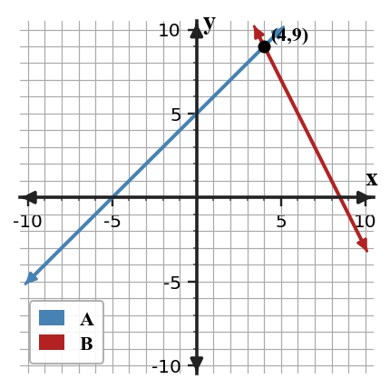

Mathematical idea: Substitution works by replacing an isolated variable with an equivalent expression from the same system.
Today you will practice the representations named in the learning target. You will connect skills from examples to an exit ticket that checks both procedures and meaning.
Learning Target: Students will solve systems using substitution and choose efficient forms for solving.
I can statements
This is a long-range preview for future lessons. Do not solve it today. Instead, annotate it individually. Circle anything familiar, underline symbols or directions that seem important, and write notes about what information you think will be needed later.
As you annotate, ask yourself: What parts (words, symbols, graphs) do you KNOW? What parts look FAMILIAR? What parts look like jibberish?
Create a system of two linear equations that has solution $(4,3)$ and is efficient to solve by substitution because one equation is already solved for $y$.
Teacher note: This is only an annotation preview. Do not solve the future task; ask students to circle familiar representations and underline constraints.
Directions
Read the introduction aloud with a partner or in a small group. As you read, annotate the text by highlighting important ideas, circling key vocabulary, and writing short notes about connections, questions, or predictions in the margins.
Substitution starts by looking for a variable that is already isolated. The expression on the other side of that equation replaces the isolated variable in the second equation. This turns a two-variable system into one equation with one variable.
After the one-variable equation is solved, the value must be substituted back to find the other coordinate. The ordered pair is the pair of values that makes both original equations true. In a context, each coordinate should be interpreted with its variable meaning.
Not every system is equally friendly to every method. A system with $y$ already isolated often invites substitution, while a system with opposite coefficients may invite elimination. Choosing based on structure can reduce mistakes and extra steps.
Helpful representations include slope-intercept equations, equations solved for one variable, substitution work, ordered pairs, and contextual solution statements. The representation you choose should make the next algebra move clearer.
Substitution also supports modeling because one quantity can be described in terms of another. Once the relationship is substituted, both constraints are being used at the same time.
Teacher note: Listen for annotations that connect vocabulary to representations. Follow-up: Which representation would you want to see first?
Stop and Discuss
Intro answers: 1. The expression equal to the isolated variable is substituted. 2. It is the value pair that satisfies both equations and represents both quantities in context. 3. An efficient form makes the one-variable equation simpler and lowers the chance of algebra errors.
Substitution is most direct when one equation already tells you what a variable equals.
$$\begin{aligned}y&=3x+1\\2x+y&=21\end{aligned}$$Because $y=3x+1$, replace $y$ in the second equation with $3x+1$.
$$2x+(3x+1)=21$$The new equation uses both original constraints but has only one variable.
A system is shown below.
$$\begin{aligned}y&=4x+2\\3x+y&=23\end{aligned}$$Example 1 answer: Replace $y$ with $4x+2$. The equation is $3x+(4x+2)=23$. It is efficient because $y$ is already isolated.
Teacher reminder: Ask students to name the representation they used before they describe the procedure.
A system is shown below.
$$\begin{aligned}x&=2y+1\\x+y&=16\end{aligned}$$You Try It 1 answer: Replace $x$ with $2y+1$. The equation is $(2y+1)+y=16$. It uses the first equation inside the second equation.
Teacher reminder: Have students compare their setup with a partner before simplifying.
Stop and Discuss
Stop and Discuss 1 possible response: Look for the variable already isolated; substitute the expression it equals.
Follow-up: What evidence would convince someone who disagrees?
A substitution solution can be checked by seeing whether both lines meet at the same ordered pair.
$$\begin{aligned}y&=x+5\\2x+y&=17\\2x+(x+5)&=17\\3x+5&=17\\x&=4,\quad y=9\end{aligned}$$| $x$ | Line 1 $x+5$ | Line 2 $17-2x$ |
|---|---|---|
| 4 | 9 | 9 |

Context: The ordered pair $(4,9)$ is the one input-output pair that satisfies both equations.
Use substitution to solve the system.
$$\begin{aligned}y&=x+5\\2x+y&=17\end{aligned}$$Example 2 answer: $2x+(x+5)=17$, so $3x=12$ and $x=4$. Then $y=9$. Check: $9=4+5$ and $8+9=17$.
Teacher reminder: Ask students to name the representation they used before they describe the procedure.
Use substitution to solve the system.
$$\begin{aligned}y&=3x-2\\x+y&=14\end{aligned}$$You Try It 2 answer: $x+(3x-2)=14$, so $4x=16$ and $x=4$. Then $y=10$. Check: $10=12-2$ and $4+10=14$.
Teacher reminder: Have students compare their setup with a partner before simplifying.
Stop and Discuss
Stop and Discuss 2 possible response: One variable is replaced by an equivalent expression using the other variable, so only one variable remains.
Follow-up: What evidence would convince someone who disagrees?
One variable is already isolated in this system.
$$\begin{aligned}x&=2y+3\\x+y&=18\end{aligned}$$Example 3 answer: Substitute $2y+3$ for $x$. $(2y+3)+y=18$, so $3y=15$, $y=5$, and $x=13$. It avoids rearranging the second equation.
Teacher reminder: Ask students to name the representation they used before they describe the procedure.
One equation is already solved for $y$.
$$\begin{aligned}y&=5x-1\\2x+y&=20\end{aligned}$$You Try It 3 answer: Substitute $5x-1$ for $y$. $2x+(5x-1)=20$, so $7x=21$, $x=3$, $y=14$. $y$ is already isolated.
Teacher reminder: Have students compare their setup with a partner before simplifying.
Stop and Discuss
Stop and Discuss 3 possible response: The isolated variable made the first algebra step direct and avoided extra rearranging.
Follow-up: What evidence would convince someone who disagrees?
A system is efficient for substitution when an equation is already solved for $x$ or $y$, or can be solved with very little work.
$y=2x-3$ can be substituted immediately.
$x+4=2y$ can be rewritten before substitution.
$5x-3y=18$ may be better for elimination.
The chosen method should create a clear one-variable equation.
A student wants the shortest algebra path for this system.
$$\begin{aligned}5x+y&=31\\y&=x+1\end{aligned}$$Example 4 answer: Plan: replace $y$ with $x+1$ in $5x+y=31$. $5x+(x+1)=31$, so $6x=30$, $x=5$, $y=6$. Substitution is efficient because $y$ is isolated.
Teacher reminder: Ask students to name the representation they used before they describe the procedure.
Choose an efficient path before solving.
$$\begin{aligned}4x+y&=34\\y&=2x+4\end{aligned}$$You Try It 4 answer: Replace $y$ with $2x+4$. $4x+(2x+4)=34$, so $6x=30$, $x=5$, $y=14$. Elimination would need rearranging or multiplying first.
Teacher reminder: Have students compare their setup with a partner before simplifying.
Stop and Discuss
Stop and Discuss 4 possible response: Substitution is best when a variable is isolated or easy to isolate; otherwise elimination may be faster.
Follow-up: What evidence would convince someone who disagrees?
Today you used substitution to solve systems when one variable was already isolated or easy to isolate.
The key move is replacing a variable with an equivalent expression, then solving the resulting one-variable equation.
A common error is substituting without parentheses or forgetting to find the second coordinate.
Strong understanding means you can choose substitution when it is efficient and interpret the ordered pair in context.
Look back at the future task. Do not solve it yet. Highlight one part that makes more sense now than it did at the beginning. Circle one part that still feels unfamiliar. Write one sentence about what representation you would look at first.
In the system $y=3x-4$ and $2x+y=11$, which expression should replace $y$ during substitution?
Solve by substitution.
$$\begin{aligned}y=2x+1\\x+y=13\end{aligned}$$What is one idea about solving systems by substitution you understand better now than at the start of class? Write at least one complete sentence.
What is one thing about solving systems by substitution you still want to understand or practice? Be specific — name the idea, not just "everything."